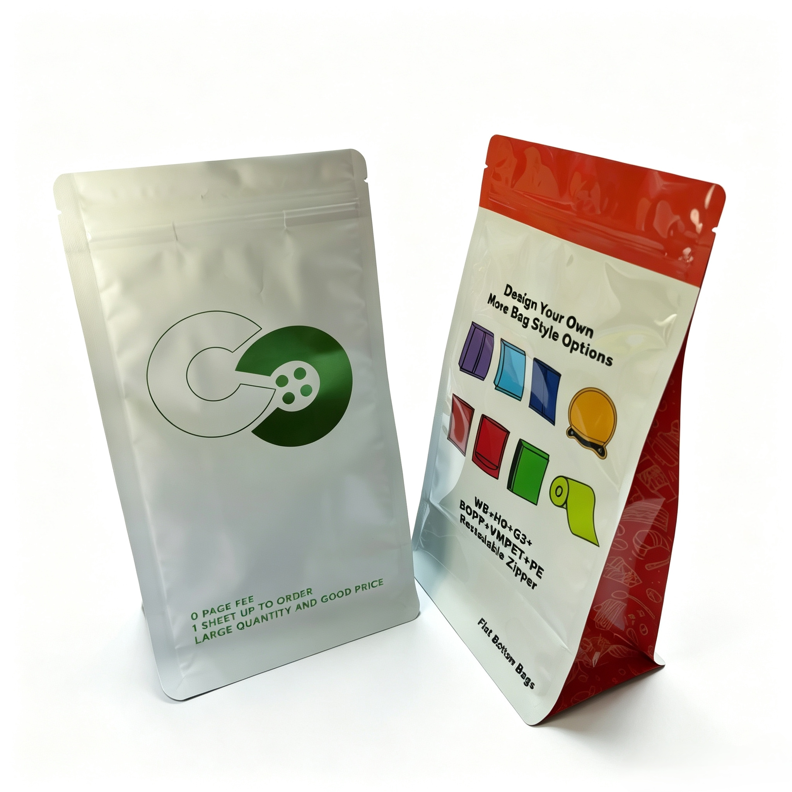

E-Commerce Ready Flexible Packaging: Engineering Pouches to Withstand Transit Stress

The explosion of e-commerce has fundamentally changed the demands on flexible packaging. A pouch that performs well on a retail shelf is not necessarily ready for the rigors of a fulfillment center, a delivery truck, or a customer's doorstep.
In physical retail, packaging helps win the purchase at the shelf. In e-commerce, packaging helps win what comes after: satisfaction, reviews, recommendations, and repeat orders. The "shelf" is now the front porch, the camera lens, and the social feed.
Packaging that fails in transit — a torn bag, a burst seal, a crushed corner — does more than damage a product. It damages a brand. This guide breaks down the key engineering considerations for designing flexible packaging that survives the e-commerce supply chain.
1. The Real-World Hazards of E-Commerce Transit
Once a product leaves the warehouse, real-world conditions test packaging immediately: friction and tearing during handling, pressure and shifting during transport, exposure to moisture and temperature changes, and last-mile delivery stress.
For flexible packaging, this is where performance breaks or holds. If a pouch seal fails, the product is exposed, returns increase, replacement shipments double the footprint, and waste increases across the system. At that point, the environmental impact is no longer just about the packaging material.
Research on pouch failure during transport has identified that vibration-induced damage is largely due to harmonic motion transmitted from roads, through the truck structure, and into the liquid or semi-liquid contents in pouches. This induced vibration flexes the package walls repeatedly, leading to fatigue cracks and seal failure.
2. Drop Testing: A Critical Performance Metric
Drop tests are one of the most direct measures of a pouch's ability to survive transit. In standardized 1.5-meter drop tests, pouches are dropped flat to simulate the falls they may experience during handling and delivery. The failure rate — measured by leaks or burst seals — is a direct indicator of structural integrity.
Testing data shows that material selection and film structure dramatically influence drop performance. Pouches engineered with multi-layer coextruded films can achieve 50% failure heights of 4 meters or 13 feet, compared to 2.2 meters for conventional commercial films — a significant margin of safety for real-world distribution.
Key insights from drop test data:
- Film composition matters: Multi-layer structures with optimized sealant layers significantly outperform single-layer films in drop impact resistance.
- Material density: Low-density and linear low-density polyethylene films show better drop impact performance than high-density materials.
- Seal design: Pouches with wider seal windows and robust hot-tack properties are less likely to fail in drop tests.
3. Compression and Stacking Strength
In e-commerce fulfillment, pouches are frequently stacked, compressed, and packed tightly into shipping boxes. Compression testing simulates the forces pouches experience during stacking in warehouses and transit.
Research on flexible pouches has shown that compression-induced failure rates can be dramatically different based on film engineering. In controlled compression tests simulating stacking conditions, some pouch structures achieve a zero failure rate, while conventional structures can fail at rates as high as 48% under the same conditions.
This difference is attributed to the film's ability to distribute and absorb pressure evenly rather than concentrating stress at seal edges or film weak points. Engineering for compression strength is particularly important for heavier products or multi-pack shipments.
4. Vibration and Fatigue Resistance
Vibration testing — simulating roughly 1000 miles of truck travel on medium to rough roads — reveals another critical failure mode. Pouches at the top of stacks, which have more freedom to move and are under less hydrostatic pressure, are actually more likely to fail than pouches at the bottom.
This counterintuitive finding has important implications for packaging design and packing configuration. The failure mode is largely driven by harmonic motion of the contents flexing package walls repeatedly, creating fatigue cracks over time.
Effective vibration-resistant design focuses on:
- Material flexibility: More resilient materials or thinner films that absorb vibration rather than transmitting stress to seals.
- Seal integrity: Wide seal windows and robust hot-tack properties that withstand repeated flexing.
- Packing configuration: Stacking methods that minimize the freedom of movement for pouches during transit.
5. Material Selection for E-Commerce Durability
Not all packaging materials are equally suited for e-commerce applications. The trade-offs between material choice and performance are critical to understand:
🔴 Multi-Layer Laminates
- Advantages: Superior drop impact resistance, excellent barrier performance, and high compression strength.
- Considerations: May be harder to recycle depending on the lamination structure.
- Best for: Higher-value products, larger pack sizes, and longer distribution routes.
🔴 Mono-Material PE Structures
- Advantages: Fully recyclable through store drop-off programs, good impact resistance, and superior low-temperature toughness.
- Considerations: May require slightly thicker gauges to achieve equivalent drop performance to multi-layer structures.
- Best for: Brands with strong sustainability commitments and products that require recyclable packaging.
🔴 Sealant Layer Optimization
- Hot-tack requirements: Seals must achieve sufficient strength quickly to survive handling while still warm. Wide sealing windows (temperature range) absorb production variations.
- Contamination tolerance: Sealants that can flow around fine particles reduce micro-leak risks in powder-filled pouches.
- Seal width: Safety margins in seal design prevent edge peel and tear-through during transit.
6. Design Features That Reduce Transit Failure
🔴 Tear Notch Design
- Moderate notch depth — deep notches can catch on carton edges and start tearing early.
- Controlled start that tears smoothly without opening prematurely.
- Positioned away from high-stress corners and seal edges.
🔴 Seal Geometry
- Wide seal windows (workable temperature range) absorb production variations and reduce micro-leaks from early handling.
- Minimum hot-tack requirements ensure seals survive while still warm.
- Corner designs that distribute stress rather than concentrating it at vulnerable points.
🔴 Right-Sizing
- Matching pack dimensions to product dimensions minimizes headspace and reduces movement inside the outer carton.
- Reducing excess void fill cuts both transportation cost and the potential for shifting and damage.
- Dimensional weight charges make right-sizing a direct cost driver for e-commerce shipments.
7. The Sustainability-Performance Balance
A common mistake is focusing on packaging material alone without considering performance. Switching to recyclable films or paper-based materials is valid, but it doesn't guarantee a better outcome in practice.
Leading brands are shifting toward performance-first thinking: designing stronger structures to prevent tearing, ensuring seal integrity, selecting materials suited to real transport conditions, and balancing recyclability with durability.
If a pouch tears or a seal fails, the environmental impact is no longer about the packaging material. Returns increase, replacement shipments double the footprint, and waste increases across the system.
Conclusion
E-commerce ready flexible packaging is not about making pouches stronger in a general sense. It is about engineering them to survive the specific stresses of the e-commerce supply chain: drops, vibration, compression, and repeated handling.
The key factors are clear:
- Drop performance — influenced by film composition, sealant selection, and seal geometry.
- Compression strength — determined by film structure and the ability to distribute pressure evenly.
- Vibration resistance — improved by material flexibility, robust seals, and thoughtful packing configuration.
- Right-sizing — reduces cost, damage, and material waste simultaneously.
At Shenying Packing, we design flexible packaging that performs in the real world — not just on the shelf. If you are preparing to launch or scale your e-commerce program, our technical team can help you engineer pouches that survive the journey and deliver your product intact.
Need e-commerce ready flexible packaging that survives transit?
Our engineering team can help you design pouches with the right drop, compression, and vibration resistance for your distribution network.
📧 Email: may.lee@shenyingpacking.com
💬 WhatsApp: +86 13424643780